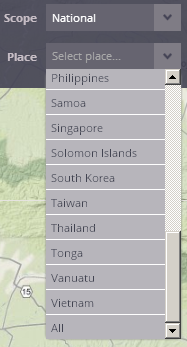
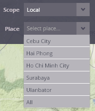

Selection of the place of interest
This menu provides the user a possibility to select the place (territory) of interest.
To enable the selection of the "Place", Scope has to be already selected - if not, selection of the "Place" remains disabled.


For each Scope, different set of "Places" is available in the application:
The Regional scope - the user can start with the "region" - by now, the East Asia and Pacific region is available as a representation of the region.

The National scope gives the user a opportunity to select one of countries from the East Asia and Pacific region or to start with the overview of all countries in the region, by selecting the option "All".

The Local scope enables the user to select the area of one of five cities covered by land cover classification produced in frame of PUMA project by GISAT company, all of these cities are situated in the East Asia and Pacific region. Cebu City (Philippines), Hai Phong and Ho Chi Minh City (both Vietnam), Surabaya (Indonesia) and Ulanbatar (Mongolia) are provided at the list. It is possible to start either with one of the cities, or with the complete set of the cities, by selecting "All".

Created with the Personal Edition of HelpNDoc: Write eBooks for the Kindle